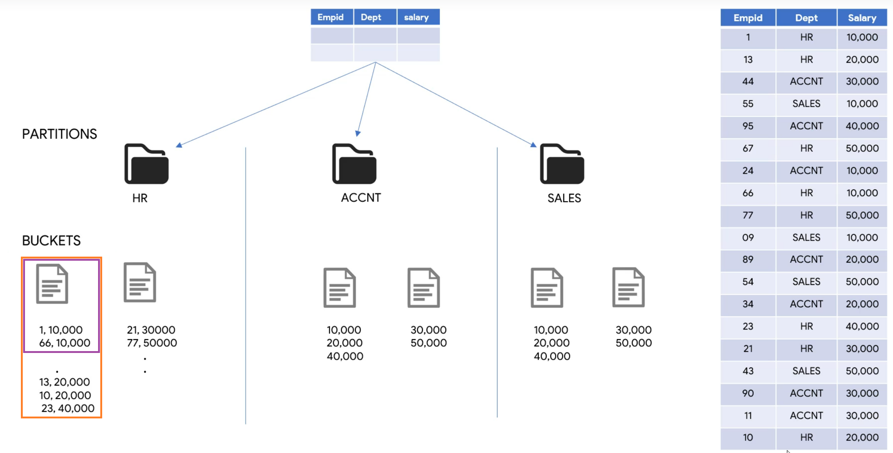
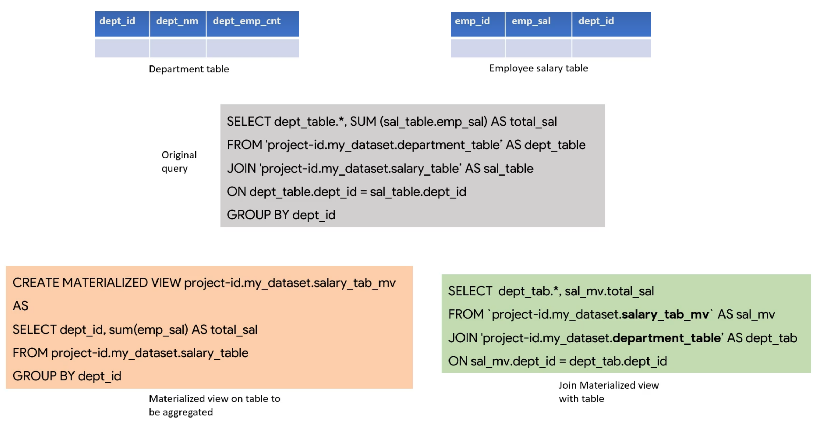

AI & ML Services
AI Building Blocks provide AI through simple REST calls
Cloud AutoML enables training models on custom datasets
AI Platform provides end-to-end ML pipelines on-premises and cloud
AI Hub is a Google hosted repository to discover, share, and deploy ML models. It is a collection of artifacts and various resourses that can be shared
AI Building Blocks
All can be used via API

AI Hub
Repository of plug-and-play AI Components
Includes:
- Kubeflow pipeline components
- Jupyter
- Tensorflow modules
- VM images
- Trained models
Content shared between teams
AI Platform
provides end-to-end ML pipelines on-premises and cloud
For Advanced usecases: custom models
Built on Kubeflow, based on Kubernetes
Includes tools for:
- Data preparation
- training
- inference
Cloud AutoML
Enabls train models without writing code, using them as black-box
Services
Sight:
- Vision
- Video Intelligence
Language:
- NLP
Structure Data
- Tabular data
Compute Services
Where code is deployed and executed
- Serverless environment
Choices:
- App Engine: fully managed platform as a service (PaaS)
- Compute Engine: IaaS. Provides configurable VMs
- Kubernetes Engine: orchestration (containers)
- Cloud Functions: functions as a service (FaaS)
Use cases
App Engine
Fully managed platform: no need to deal with provisioning/configurating/scaling/managing/securing the platform.
Just: bring code -> deploy -> scale
Available in 2 environments:
- Standard: runs in a sandbox ∼ with limitations
- Flexible:
- maximum control
- uses Docker to deploy and scale
Cloud Functions
Serverless execution environment.
It is fundamentally different from App Engine, Compute Engine, Kubernetes engine.
Cloud functions are written as functions with a well defined entrypoint and returning , deploying with no changes.
Tipically serverless compute environments respond to events via triggers. They run like a daemon
Compute Engine
- Various fully configurable VMs
- Persistence is additional
Kubernetes Engine (GKE)
Managed environment for deploying containerzed apps managed by Kubernetes
graph LR
A[Container IMG] -->|packaging| B(Kubernetes artifacts)
-->|deploy| C[Cluster]
--> E[Scale]
Provides automatic:
- scaling
- upgrades
- repair
Definitions
Cluster
group of machines called nodes that run containerized applications has at least 1 [[#Worker node]]
When Launching a cluster, GKE has 2 elements:
- [[#Control plane]] (managed)
- data plane
Worker node
hosts [[#pod]] that are the components of application's workload
Pod
A set of running containers in your cluster
Control plane
Container's orchestration layer that exposes:
- API
- Interfaces to define/deploy/manage the lifecycle of containers
Manages [[#Worker node]]s and [[#Pod]]s in the [[#Cluster]]
In Production environments runs on multiple computers.

Node pool
GKE’s unique feature: mixes homogeneous (with same configuration) VMs.
When creating a cluster, a node pool is created. Then you can add additional nodepools to the cluster es. If you need more power
You can create/upgrade and delete nodespools without affecting the cluster.
Data Analytics Services
Uses Cloud Pub Sub for ingesting data at scale
Cloud Dataflow processes data in real-time or batch
Cloud Dataproc is a Big Data service for Hadoop and Spark jobs
Cloud Datalab is for analyzing and visualizing data
Use Cases

BigQuery
Serverless, scalable cloud data warehouse
Has built-in BI Engine and Machine Learning
Uses SQL dialect
Federated queries can process external data sources:
- Cloud Storage
- Cloud Bigtable
- Spreadsheets
Keeps 7 days history of history
Can analize big amounts of data in seconds
Architecture
UI
how Query Execution Plan works
Query
Query settings Caching Wildcards: Enables to query multiple tables at once using concise SQL statements Scheduled queries and backfilling Saved queries
Schemas
Automatic schema detection Designing Efficient Schemas and Designing Efficient Schemas
Dataset
Managing access Copying dataset Native operations on Table for Schema change Manual operations on Table
Table partitioning
Table partitioning Ingestion time partition tables Field partition
Clustered Tables
Clustered Tables When to use Clustering or Partitioning or Both ==todo== create clustered table ==todo== Clustered Tables
Loading & Querying External Data Sources
It can be in BigTable, CloudStorage, ClousSQL, Google Drive...
Create Cloud Storage bucket Create & Query Permanent Table on Cloud Storage bucket External data source Limitations
Views
CLI
Python lib
Example of End-to-end Data Pipeline Build Streaming data pipelines
Pricing
Best practices
Storage & Database Services
Storage Services
- Unified object storage for a variety of applications
• Applications can store and retrieve objects through single API
• GCS can scale to exabytes of data
• Data can be stored within a single region, dual-region, or multi-region

Persistent disks
- Independent (out of the context) from compute engine VMs
- Only one writer, multiple readers
- Can be replicated in regional or local
Cloud Filestore
- Managed
- For legacy apps
- Shared & NAS-like filesystem
- for GCE e GKE
- Useful for on-premises applications
- Zonal storage for replications
- encrypted
graph TD
A[Bucket] -->B(Folder)
A-->C[Folder]
C --> D[File]
C --> E[File]

database_services
GCP Database Services
Relies on NoSQL databases Multi-region distribution It has in-memory database used for accelerating the performances
Google Cloud SQL
Fully managed RDBMS that simplifies the setup and mantainance.
Supports 3 types of RDBMS:
- MySQL
- PostgreSQL
- Microsoft SQL Server
It delivers scalability, security and reliability of DB instances
Google Cloud Big Table
Managed NoSQL database service
Ideal for:
- Large scale & low latency applications
- throughput intensive data processing and analytics
Is an alternative to Apache HBase column-oriented DB
Google Cloud Spanner
Managed & scalable Relational DB (and NOSQL) for regional and global application data
It horizontally scales across rows, regions and continents
Data is replicated synchronously
Its instances can be:
- R/W
- Read only
- Witness: checks consistency
Google Cloud Memorystore
Fully-managed in-memory data store service for Redis.
Are ideal for applications caches providing sub-millisecond data access.
Promises 99.9% availability with automatic failover
Use Cases

Architecture
Engine: Dremel
Combination of columnar data layouts and tree architecture
File System: Colossus
(Google distribuited filesystem) It uses columnar storage and compression systems.
The columnar format is called "capacitor"
Column vs Row format
Row: columns are tied to each other and can't be separated. Column: columns are in separated files that can be in separate disks.
In Row format, even if we selected some columns, the full table scan will be done. In column format not. It can save time and can be parallelized.
Usual columnar formats vs BigQuery's capacitor
The difference lies in how compression is operated:
BigQuery can operate on compressed data without decompressing
General architecture
Automatic schema detection
BigQuery:
- selects a random file in source,
- scans up to 100 rows as a sample
- examinates each field and attempts to assign data type based on sample values
Limitations
This feature is only avaiable for CSV and Json file format.
Note that: all columns will be nullable by default. Otherwise you will need to insert fields manually
Headers
It infers headers by comparing the first row of the file with other rows. If the first line contains only strings, and the other lines do not, BigQuery assumes that it is a header row.
Header is'nt taken into consideration while decidingthe schema of table.
Dates
Must be in YYYY-MM-DD format
Timestamps can be:
hh:mm:ss YYYY-MM-DDYYYY-MM-DD hh:mm:ss.mm
Best Practices
Performance and cost factors
- How many bytes are read from query
- Shuffling: how many bytes does your query pass to each slot
- Computation: CPU times
- Outputs: how many bytes are written
Reducing bytes read
- Avoid
SELECT * LIMITdoes not limit data scanned. Use "Maximum bytes billed" in query settings instead- Use partitioning or clustering
- Use denormalization
- Use Materialized Views to keep aggregated data
- Use cached results
- Avoid external data source
SQL best practices
- Avoid self joins use Window function instead
- Avoid cross joins, pre aggregate data or use Window function
- Avoid DML single row modifications
Build Streaming data pipelines
Based on Cloud Pub Sub and Example of End-to-end Data Pipeline.
Set streaming option to true:
options.view_as(StandardOptions).streaming = True
Reading from stream
instead of beam.io.readFromTxt(), we must use beam.io.ReadFromPubSub()
Then remove the pipelines:
- cleaned_data
- delivered_orders
- other_orders This because streams are unbounded data and can't be grouped
Adding wait_until_finish()
adding after ret=p.run():
ret.wait_until_finish()
Note that the code after this line won't run until the finish of the pub/sub. If we want to launch other commands we must creat a new thread and launch it before
wait_until_finish()
BigQuery CLI
You can avoid the
bscommand by opening the "bigquery shell" usingbq shell
Showing main info
bq show
Showing schema
bq show -- schema dataset_name.names
Listing datasets
bq ls
Execute SQL query
bg query --use_legacy_sql=false <query>
Flags
--append_table
--destination_table
--replace: for overwriting destination table
--destination_schema: ir destination table doesn't exist, will be created with the specified schema
--time_partitioning_field: partitioning on some time (column name)
--time_partitioning_type: ingestion time ie day
--time_partitioning_expiration
--clustering_fields: up to 4 comma separated columns to cluster
--destination_kms_key: resurce id of customer generated encryption key
--batch: batch mode
--maximum_bytes_billed
--label: applying label to a query job
--dry_run: validator flag to check the correctness of a query and bytes to be processed
--max_rows: max rows to return
--require_cache: only run if can refer to cached results
--use_cache: set to false if not wanting to use cached results
--schedule: makes recurring scheduled query
--display_name: schedule's name
--target_dataset: destination table for scheduled queryes
--flatten_results: for nested and repeated fields
Flags
bq --global_flag1=value .. command --command_spacific_flag1=value .... dataset.tablename
--format
Format of command's output
- pretty
- sparse
- prettyjson
- json
- csv
--job_id (commands creating job)
Giving a name to the job.
Used with cp, load, extract..
==skipping creating dataset and table==
Cli Exclusive operations
Making field nullable (relaking field)
bq load --schema_update_option ALLOW_FIELD_RELAXARION dataset_name.table_name <filepath> column_name:type,clumn2:type...
Copying selected partitions of a table
bq cp -a dataset.origin_table$partition dataset.destination
Caching
If a query is cached, you won't be charged
To retrieve data from stored cache, the query should be the exact replica of the original query.
It must have a size <10Gb
Not cached:
- When the destination table is spcidied to store results in in query
- If tables/views have changed
- In tables with streaming ingestion
- If using non-deterministic functions like timestamp(), now(), current_user()
- Using external data sources like BigTable or CloudStorage
Clustered Tables
Clustering or Bucketing i a data organization tecnique (like partition) for decomposing large datasets into more manageable ports.
Fundamental of it is that when table is bucketed in a column, then all the records with same column name will go to the same bucket.
Example: salaries DB
Bucketing on salary column.
A bucket will contain people with same salary (purple box) and nowhere else
Note: a bucket can contain multiple salaries values (orange box))

Do and Don'ts
==section 8==
Copying dataset
Once created, a dataset can't change location. The only way to do that is making a copy.
First,
1. Enable BigQuery Data Transfer API
Sidebar > APIs & Services > Enable APIs & Services > search "BigQuery Data Transfer API" > Enable
2. Create a new dataset
"Create Dataset" button
3. Copying the dataset
Go to the source dataset and click "copy dataset"
Then select destination
Scheduling
Left menu > Transfers > Create Transfer
Source: dataset copy
set Transfer Config Name
set timing
In the destination: the dataset ID
Limitations
- only one active copy at time
- can't copy:
- views
- external tables
- streaming buffer
Create & Query Permanent Table on Cloud Storage bucket
"Create Table"
Create table from: "Google Cloud storage" > Browse the file
Table Type 2 options:
- Native: directly to bigquery
- External: only linked to external
Note: External data doesn't provide table preview and don't get how many bytes will be processed
Permanent vs temporary tables
Printing filename where table belongs
SELECT _FILE_NAME
Create Cloud Storage bucket
Applications may directly or indirectly store the project data into Cloud Storage in any structured or unstructured format.
Search "storage" and open it. That's the Storage Bucket Click "Create Bucket" button.
All the failes uploaded on it will be accessible at gs://bucket_name/filename.filename_format
Designing Efficient Schemas
BigQuery performs better when database is denormalized.
But in this case GROUP BY can slow down queries.
Here BigQuery supports columns with nested and repeated data.
Nested & repeated data
Here Data is not duplicated but in one table Only nested columns are repeated
In BigQuery, nested = struct and repeated = array -> we will have array of structs
So nested and repeated columns can mantain relationships without perdormance impact.

Here's the file
{
"orderId": 1,
"storeLocation": "NY",
"products": [
{
"productId": 1234,
"productCategory": "Cosmetics",
"productName": "shampoo",
"productPrice": 140
},
{
"productId": 421,
"productCategory": "Kitchen",
"productName": "grinder",
"productPrice": 240
}
]
}
Specifying nested fields in schema
You'll need to click "Create table" button
Then set type ==RECORD== and mode ==REPEATED==. Then a + (plus) button will appear at the right of the Name field

How to query the table
You'll need to use UNNEST
SELECT storeLocation, products
FROM `bigquery-demo-285417.dataset1.kiopl`
CROSS JOIN UNNEST(products) as a
where a.productName = "Grinder"
Example of an End-to-end Data Pipeline
We want to create ad appligation for analysis for a restaurant. Each day we receive a csv file containing this information

Our approach

Using Apache Beam
Apache Beam is an open source, unified model for defining both batch- and streaming-data parallel-processing pipelines. The Apache Beam programming model simplifies the mechanics of large-scale data processing
pip install apache-beam[gcp]
Code
Setup
import apache_beam as beam
from apache_beam.options.pipeline_options import PipelineOptions, StandardOptions
import argparse
from google.cloud import bigquery
parser = argparse.ArgumentParser()
parser.add_argument('--input',
dest='input',
required=True,
help='Input file to process.')
path_args, pipeline_args = parser.parse_known_args()
inputs_pattern = path_args.input
options = PipelineOptions(pipeline_args)
Creating functions for cleaning data
def remove_last_colon(row): # OXJY167254JK,11-09-2020,8:11:21,854A854,Chow M?ein:,65,Cash,Sadabahar,Delivered,5,Awesome experience
cols = row.split(',') # [(OXJY167254JK) (11-11-2020) (8:11:21) (854A854) (Chow M?ein:) (65) (Cash) ....]
item = str(cols[4]) # item = Chow M?ein:
if item.endswith(':'):
cols[4] = item[:-1] # cols[4] = Chow M?ein
return ','.join(cols) # OXJY167254JK,11-11-2020,8:11:21,854A854,Chow M?ein,65,Cash,Sadabahar,Delivered,5,Awesome experience
def remove_special_characters(row): # oxjy167254jk,11-11-2020,8:11:21,854a854,chow m?ein,65,cash,sadabahar,delivered,5,awesome experience
import re
cols = row.split(',') # [(oxjy167254jk) (11-11-2020) (8:11:21) (854a854) (chow m?ein) (65) (cash) ....]
ret = ''
for col in cols:
clean_col = re.sub(r'[?%&]','', col)
ret = ret + clean_col + ',' # oxjy167254jk,11-11-2020,8:11:21,854a854,chow mein:,65,cash,sadabahar,delivered,5,awesome experience,
ret = ret[:-1] # oxjy167254jk,11-11-2020,8:11:21,854A854,chow mein:,65,cash,sadabahar,delivered,5,awesome experience
return ret
def print_row(row):
print row
Creating collections
delivered_orders = (
cleaned_data
| 'delivered filter' >> beam.Filter(lambda row: row.split(',')[8].lower() == 'delivered')
)
other_orders = (
cleaned_data
| 'Undelivered Filter' >> beam.Filter(lambda row: row.split(',')[8].lower() != 'delivered')
)
(cleaned_data
| 'count total' >> beam.combiners.Count.Globally() # 920
| 'total map' >> beam.Map(lambda x: 'Total Count:' +str(x)) # Total Count: 920
| 'print total' >> beam.Map(print_row)
)
(delivered_orders
| 'count delivered' >> beam.combiners.Count.Globally()
| 'delivered map' >> beam.Map(lambda x: 'Delivered count:'+str(x))
| 'print delivered count' >> beam.Map(print_row)
)
(other_orders
| 'count others' >> beam.combiners.Count.Globally()
| 'other map' >> beam.Map(lambda x: 'Others count:'+str(x))
| 'print undelivered' >> beam.Map(print_row)
)
Creating dataset and adding a table
client = bigquery.Client()
dataset_id = "{}.dataset_food_orders".format(client.project)
try:
client.get_dataset(dataset_id)
except:
dataset = bigquery.Dataset(dataset_id) #
dataset.location = "US"
dataset.description = "dataset for food orders"
dataset_ref = client.create_dataset(dataset, timeout=30) # Make an API request.
def to_json(csv_str):
fields = csv_str.split(',')
json_str = {"customer_id":fields[0],
"date": fields[1],
"timestamp": fields[2],
"order_id": fields[3],
"items": fields[4],
"amount": fields[5],
"mode": fields[6],
"restaurant": fields[7],
"status": fields[8],
"ratings": fields[9],
"feedback": fields[10],
"new_col": fields[11]
}
return json_str
table_schema = 'customer_id:STRING,date:STRING,timestamp:STRING,order_id:STRING,items:STRING,amount:STRING,mode:STRING,restaurant:STRING,status:STRING,ratings:STRING,feedback:STRING,new_col:STRING'
(delivered_orders
| 'delivered to json' >> beam.Map(to_json)
| 'write delivered' >> beam.io.WriteToBigQuery(
delivered_table_spec,
schema=table_schema,
create_disposition=beam.io.BigQueryDisposition.CREATE_IF_NEEDED,
write_disposition=beam.io.BigQueryDisposition.WRITE_APPEND,
additional_bq_parameters={'timePartitioning': {'type': 'DAY'}}
)
)
(other_orders
| 'others to json' >> beam.Map(to_json)
| 'write other_orders' >> beam.io.WriteToBigQuery(
other_table_spec,
schema=table_schema,
create_disposition=beam.io.BigQueryDisposition.CREATE_IF_NEEDED,
write_disposition=beam.io.BigQueryDisposition.WRITE_APPEND,
additional_bq_parameters={'timePartitioning': {'type': 'DAY'}}
)
)
from apache_beam.runners.runner import PipelineState
ret = p.run()
if ret.state == PipelineState.DONE:
print('Success!!!')
else:
print('Error Running beam pipeline')
Creating a view
view_name = "daily_food_orders"
dataset_ref = client.dataset('dataset_food_orders_latest')
view_ref = dataset_ref.table(view_name)
view_to_create = bigquery.Table(view_ref)
view_to_create.view_query = 'select * from `bigquery-demo-285417.dataset_food_orders_latest.delivered_orders` where _PARTITIONDATE = DATE(current_date())'
view_to_create.view_use_legacy_sql = False
try:
client.create_table(view_to_create)
except:
print ('View already exists')
Run
python code.py -- input file-path
Airflow
pip3 install apache-airflow[gcp]
from airflow import models
from datetime import datetime, timedelta
from airflow.contrib.operators.dataflow_operator import DataFlowPythonOperator
default_args = {
'owner': 'Airflow',
'start_date': datetime(2020, 12, 24),
'retries': 0,
'retry_delay': timedelta(seconds=50),
'dataflow_default_options': {
'project': 'bigquery-demo-285417',
'region': 'us-central1',
'runner': 'DataflowRunner'
}
}
with models.DAG('food_orders_dag',
default_args=default_args,
schedule_interval='@daily',
catchup=False) as dag:
t1 = DataFlowPythonOperator(
task_id='beamtask',
py_file='gs://us-central1-demo-food-order-e90e61dc-bucket/code_written_python_3.py',
options={'input' : 'gs://daily_food_orders/food_daily.csv'}
)
Cloud composer
On Bq, search "Cloud composer" > create envirnoment

Query plan execution
What is running under the wood when the query is running?
It breaks declarative SQL statements into granular sets of execution stages and designs an execution graph

So will be created an Execution Plan to list all the parallel and dependent tasks.
To achieve that level of performance, BigQuery executes queries completely in memory.
BigQuery’s execution engine builds simple and purely in-memory operators and achieves petabyte-scale analytics through scalable data repartitioning, or "shuffle."
Shuffle
Is a key ingredient in any distributed data processing system.
The shuffle step is required for execution of large and complex joins, aggregations and analytic operations.
Note: The shuffle step is notoriously slow
n-memory BigQuery shuffle stores intermediate data produced from various stages of query processing in a set of nodes that are dedicated to hosting remote memory.
Data partitioning
The data repartitioning abstraction defined by BigQuery shuffle consists of three entities:
- producer creates data to be repartitioned,
- consumer receives the repartitioned data
- controller process manages the shuffle.
Shuffle defines the following high-level operations:
Producer (producer_id) {
void SendRow(row, consumer_id) : Called to send a row to a given consumer
on behalf of this producer.
}
Consumer (consumer_id) {
string ReceiveRow() : Called to receive one row for this consumer.
}
Controller {
StartShuffle() : Called before any producers or consumers start sending or
receiving rows.
EndShuffle() : Called after all producers and consumers have successfully
sent and received all rows.
}
External data source Limitations
- Data consistency is not guaranteed
- External data source might not have as high performances as BigQuery
- Can't run jobs to export data
- Can't reference external data source in wildcard tables
- Partition or clustering might be limited
- No caching
Field partition
Null/wrong format
In the partition summary:
partition_id will have _NULL_ or _UNPARTITIONED_
Unpartitioned list
SELECT * FROM [dataset.table$__UNPARTITIONED__]
Ingestion time partition tables
Data inserted today will remain in today's partition.
When selecting pseudo-columns, you must use aliases.
_PARTITIONTIME_PARTITIONDATE
Getting summary
SELECT * FROM [dataset.table$__PARTITIONS_SUMMARY__]
Managing dataset access permissions
Dataset > Share dataset

Manual operations on Table
Changing column names
Can be done by writing a query where setting aliases for the new columns
SELECT * EXCEPT(name_to_change),
name_to_change as new_name
FROM table_name
Then select query settings

Changing datatype
By using a query where we cast the desired column to the desired data type.
NB: Some types can't be directly casted
SELECT * EXCEPT(col_to_change),
CAST(col_to_change as TYPE) as col_to_change
FROM table_name
Then use the same query settings as [[#Changing column names]].
Deleting column
SELECT * EXCEPT(col_to_remove),
FROM table_name
Then use the same query settings as [[#Changing column names]].
Changing column mode
Using cloud storage to save the old table and creating a new one, then restoring.
Getting old table values
You can get a table value from the last 7 days.
Here's an example:
select *
FROM table_name FOR SYSTEM_TIME AS OF TIMESTAMP_SUB(CURRENT_TIMESTAMP(), INTERVAL 1 HOUR)
then, by "query settings" you can save it wherever you want.
Materialized Views
Compared to normal views :
- occupy disk space
- are pre-computed, so they don't refer to base tables.
- Data can be manually or auto refreshed
- are faster: normal ones firstly are applied to base tables. Instead, material ones are pre-computed
- smart tuning: if a query can be served with an already created materialized view, this will be done
Example

Create a Materialized view
Simply by using CREATE MATERIALIZED VIEW name AS ...
- aggregation functions must reference a single table only
- No joins
Supports only fiew aggregation functions:
ANY_VALUE(but not overSTRUCT)APPROX_COUNT_DISTINCTARRAY_AGG(but not overARRAYorSTRUCT)AVGBIT_ANDBIT_ORBIT_XORCOUNTCOUNTIFHLL_COUNT.INITLOGICAL_ANDLOGICAL_ORMAXMINSUM
Other infos:
- can be partitioned and clustered
- can be manipulated only by
CREATE, DROP, ALTER
How to write optimized materialized views
- Avoiding filtering or computations
Manual refresh
CALL BQ.REFRESH_MATERIALIZED_VIEW('view_name'
Set auto-refresh
When creating a view
OPTION (enable_refresh = true)
or with ALTER
ALTER MATERIALIZED VIEW view_name SET OPTIONS(enable_refresh = true)
Interval of refresh
you can add refresh_interval_minutes=60
Limitations
- can't copy with jobs
- Can't export data
- can't load data in it with load query
- can't use DML statements over ita
- should have the same dataset location
- limited aggregation functions
- reference limited to one single table
- can't nest other materialized views
- onli standard SQL can be used
- max 20 for base table
Console
- In the Query editor, click More, click Query settings, and then click Advanced options.
- In the Maximum bytes billed field, enter an integer.
- Click Save.
It blocks queryes greater than Maximum bytes billed field
Native operations on Table for Schema change
By using the BigQuery's UI ("Edit Schema" button) you can do only limited of table schema changes:
Adding new fields
Them can only be:
- nullable
- repeated
required ones arent'possible
Updating existing data with new fields values
Can be done by "create table" with the same name as the destination table and setting.
In Advanced Options, set write preferences as overwrite table. So the table will be updated.
You'll need to insert the new schema when creating the "new" table
Appending rows
Same as updating but in advanced options, set append.
Pricing
Storage
Two types:
Active storage= table/partition that has been modified in past 90 days. Usually 0,02$ per month but first 10Gb are free every month
Long term storage: data is not been modified in past 90 days. Discounted 50% off. Pro: works also for partitions, if only one is active, the others will remain long-term.
Queries run
On-demand (default): charges only when the query is run. Charges are decided by number of bytes scanned Usually from 5$ (multi-region) to 9$ per Tb. first 1 Tb are free every month
Flat-rate: pay upfront to get a desired number of dedicated resources/slots for month/year
Free ops
- copy/delete/export table
- loading from Cloud storage or Local files
Python Client Library
Preliminary
1. Setting service account key
IAM & Admin > Service Accounts > New Service account and get a service key
2. install package
pip install google-cloud-bigquery
Create dataset
from google.cloud import bigquery
# Getting aggount
SERVICE_ACCOUNT_JSON=r'path to account json'
client = bigquery.Client.from_service_account_json(SERVICE_ACCOUNT_JSON)
# Setting dataset parameters
dataset_id = "<dataset_id>"
# Construct a full Dataset object to send to the API.
dataset = bigquery.Dataset(dataset_id)
dataset.location = "US"
dataset.description= "desc"
# Send the dataset to the API for creation, with an explicit timeout.
# Raises google.api_core.exceptions.Conflict if the Dataset already
# exists within the project.
dataset_ref = client.create_dataset(dataset, timeout=30)
print(dataset_ref.dataset_id)
Create table
from google.cloud import bigquery
SERVICE_ACCOUNT_JSON=r'path to account json'
# Construct a BigQuery client object.
client = bigquery.Client.from_service_account_json(SERVICE_ACCOUNT_JSON)
# TODO(developer): Set table_id to the ID of the table to create.
table_id = "bigquery-demo-285417.dataset_new.table_py"
job_config = bigquery.LoadJobConfig(
schema=[
bigquery.SchemaField("name", "STRING"),
bigquery.SchemaField("gender", "STRING"),
bigquery.SchemaField("count", "INTEGER")
],
source_format=bigquery.SourceFormat.CSV, skip_leading_rows=1, autodetect=True,
)
file_path=r'F:\record\Big Query\codes and data\names\yob1880.txt'
source_file = open(file_path, "rb")
job = client.load_table_from_file(source_file, table_id, job_config=job_config)
job.result() # Waits for the job to complete.
table = client.get_table(table_id) # Make an API request.
print(
"Loaded {} rows and {} columns to {}".format(
table.num_rows, table_id
)
)
Query
from google.cloud import bigquery
SERVICE_ACCOUNT_JSON=r'path to account json'
# Construct a BigQuery client object.
client = bigquery.Client.from_service_account_json(SERVICE_ACCOUNT_JSON)
query_to_run = "your query here"
query_job=client.query(query_to_run)
print(query_job)
Query settings
- Streaming data: for data outside google pub/sub, Cloud Dataflow
- Destination:
- tamporary table: randomly named, saved in a special dataset.
- Not sharable
- not queryable
- duration of 24 hours
- permanent table
- tamporary table: randomly named, saved in a special dataset.
- Job priority:
- Interactive: running immediately
- Batch: starts as soon as idle resources are avaiable (few miutes). When available, queries can be done concurrently
Blocking too heavy queries ($)
You can set the Maximum bytes billed field to execute only the values with less bytes.
Saved queries
You can set name and visibility.
Visibility
- Personal
- Project: are visible to BigQuery Identity & Access Management roles
Shareable links
A saved query offers a sherable link for other members of the team that offers query text only.
To view to tables or views, a user should have proper accesses.
Scheduled Queries
Backfilling Mechanism
Running the queries for previous dates which the scheduled queries run may have got missed.
Example
Suppose having:
- a source table that is refreshed daily
- a scheduled query that runs every day that looks out the source table and based on the current date loads it to another table
If some day, source table is corrupted and not populated for the last 3 days. Suppose you have restored the last 3 days on source table.
Is last three days data in the another table gone? No
Backfill allows us to run the query within a pecified date range
Hou to use Backfill
Go to BigQuery > Scheduled queries > More (on top right of the page) > Schedule backfill. (see image)
Here:
- start date is inclusive
- end date is exclusive
Note: here the dates must be in UTC, but queries schedules in dashboard are in local timezone
When data is coming from:
- pub/sub
- Cloud Dataflow
1. Setting up
You can use Query settings > Query Engine: Cloud Dataflow Engine > Save
Then, in Resources tab select Cloud Dataflow Sources ![[Pasted image 20211230124507.png]]
2. Create Dataflow Job
The destination can be BigQuery table or Pub/Sub topic
Table partitioning
Breaking the table logically into smaller segments based on some criteria, i.e. the column which we know is going to get used very frequently in where clause.
Partitioning makes the table easy to manage, performance is enhanced.
Advantages
- Improves query performance and is cost-effective
- Increases parallelism
- Independent partitions can be managed indipendently
- Different partitions can live on different filesystems: less frequently accessed data can be placed on slower disks
- Useful while doing upserts on bulk table (for daily incremental loads in datawarehouse)
Bulk data example
We have a huge target table in the datawarehouse. It's not partitioned.
The source table is some transactional database containing monthly data and gets refreshed daily with increments.

Solution
Partitioning target table on month. And daily switching the partition with a new one from source table.
This takes less time
Creating partitioned table
When creating a table, in Partition and cluster settings, choose between:
- partition by ingestion time (example Ingestion time partition tables)
- or partition by field (example Field partition)
Require partitioning filter (optional)
Users are mandate to include a WHERE clause on the partitioning column qhile they query the table.
This implies that user is forced to take full use of partitioning while the table is partitioned. It may reduce cost and improve performances
Copy and paste
DML ops
Same as normal but adding a fltering on the partition
Big Query's UI
Jobs history
Displays project's load,export and copy jobs.
Displays the last 6 months, limited to 1000 entries
Transfers
Helps in transferring external data from SaaS to BigQuery on a regular basis.
Views
- don't have storage cost
- label, description and expiration time can be added after the creation
- can't be renamed, can only copy a table with the desired name and delete the old one
- data can't be exported
- cannot be referenced in wildcards
When to use Clustering OR Partitioning OR Both
1. Partition only
Need of strict cost guarantees before running a query
in a single partition all the related data that belongs to that partition is stored.
For example, a partition of today’s date will contain only today’s data, nothing else. In a query using WHERE data = .. BigQuery will know where to go.
Need to handle/manage table at partition-level for expirations, DML ops...
You can set expiration time to single partitions and not the entire table.
2. Partition and Clustering
No need of of strict cost guarantees before running a query
using the WHERE clause and using partitions optimized on it,
When we go into the buckets. It can contain multiple values, so the entire bucket must be processed
Data is huge within partition
Using frequend filter and aggregate queries on table
BigQuery automatically sorts data in a table based on clustering columns
3. Clustering only
Data is unique
And partition would create a large number of partitions (thousands). Here clustering is better.
Avg partition size is under 1 GB
Wildcards
Enables to query multiple tables at once using concise SQL statements.
Them are just representation of union of all the tables matching a particular wildcard espression.
Can be used for tables with:
- similar schema
- same prefix

Practical example
If having a dataset containing tables with the same schema for every year. say:
weather2000, weather2001, ... , weather2021
you can use
SELECT ...
FROM `dataset.weather200`
to get the union from years 2000 to 2009
Filtering by suffix
SELECT ...
FROM <wildcard>
WHERE _TABLE_SUFFIX = <wanted suffix>
Limitations
- Supports Big Query storage only.
Are not allowed:.
- External tables
- Views, even if in a list of tables
- Chached results are not supported. Every query will be billed
- Can't be used in Insert/delete/update statements. But it is possible to use wildcards in the
WHERE
BigQuery
Serverless, scalable cloud data warehouse
Has built-in BI Engine and Machine Learning
Uses SQL dialect
Federated queries can process external data sources:
- Cloud Storage
- Cloud Bigtable
- Spreadsheets
Keeps 7 days history of history
Can analize big amounts of data in seconds
Architecture
UI
how Query Execution Plan works
Query
Query settings Caching Wildcards: Enables to query multiple tables at once using concise SQL statements Scheduled queries and backfilling Saved queries
Schemas
Automatic schema detection Designing Efficient Schemas and Designing Efficient Schemas
Dataset
Managing access Copying dataset Native operations on Table for Schema change Manual operations on Table
Table partitioning
Table partitioning Ingestion time partition tables Field partition
Clustered Tables
Clustered Tables When to use Clustering or Partitioning or Both ==todo== create clustered table ==todo== Clustered Tables
Loading & Querying External Data Sources
It can be in BigTable, CloudStorage, ClousSQL, Google Drive...
Create Cloud Storage bucket Create & Query Permanent Table on Cloud Storage bucket External data source Limitations
Views
CLI
Python lib
Example of End-to-end Data Pipeline Build Streaming data pipelines
Pricing
Best practices
Cloud Dataflow
Managed For transforming and enhancing data in streams/batches
Based on Apache Beam
Serverless approach automating provisioning and management.
Used for manipulating or preprocessing data
Input can be Cloud Pub Sub output Big Query or Cloud Storage or Cloud SQL
Cloud Datalab
Interactive tool for data exploration, analysis, visualization and Machine Learning.
Built on Jupyter Notebook
Cloud Dataproc
Managed Apache Hadoop and Apache Spark cluster environments
Automated cluster management
Moving existing Big Data projects without redevelopment
Intgrated with Cloud Dataflow and Big Query
Cloud Pub/Sub
Based on publishing/subscription pattern
Fully-Managed real-time messaging service allowing to efficiently send and receive messages between applications and services.
Service used for Ingestion data at scale
Integrated with Cloud Storage and Cloud Dataflow
End-to-end encryption, Identity & Access Management
Pubblishing code example
from google.cloud import pubsub_v1
import time
publisher = pubsub_v1.PublisherClient()
topic_name = 'projects/bigquery-demo-285417/topics/data_stream_from_file'
try:
publisher.create_topic(topic_name)
except:
print ('Topic already exists')
with open('food_daily.csv') as f_in:
for line in f_in:
# Data must be a bytestring
data = line
future = publisher.publish(topic_name, data=data)
print(future.result())
time.sleep(1)
DataStudio
Tables
Data> Optional metrics
Adding other metrics hidden by default. You can select/deselect them by clicking on the bar icon at the top right of the table.
Data > Interactions > Apply filter
When clicking a row in the table, a filter will be applied to all the data
Conditional Formatting (Style > Metrics)
- Heat map
- Bar pub/sub
- conditiona formatting (custom)
Comparison Calculations
Data > Metric > <selected metrics> > Edit > Comparison Calculation
Some optons:
- Percent of total
- Difference from total
- Percent difference from total: how much data is different from the total in %
- Percentage of max: how much data is different from the highest value in its range in %
- Difference from max
- Percentage difference from max
Running Calculations
Data > Metric > <selected metrics> > Edit > Running Calculation
Also called "Running summaries"
Running sum
Each new row is added to the sum of the previous row(s).
Creating custom calculation fields
Resources > Manage added resources > <row of the desired source> > edit > Add field
You need to add a field name and write the formula using existent fields.
Case statement can also be used
Comparison Date Range
Data > Comparison Date Range

Extract data
Data Source > Extract Data Improves the performance of reports and explorations by extracting data from your data set creating a brand new table.
Can use existing data sources of any type, then select the specific fields you want to include in the extracted data source.
Can set an Auto-Update
Extracting data from an already aggregated data set, such as Google Ads or Analytics, creates a new, disaggregated data set.
Charts
Drill Down
A way to reveal additional levels of detail within a chart by clicking on arrows on the top of the tables.
ex. time series in the order of years, can be drilled down into months
Geographics Chart

Different chart styles can be set according to the metrics.
Also the map can be customized: map/satellite, roads, landmarks, labels
Metric sliders
Metrics > Metric sliders
A filter can be applied via slider by clicking on the settings icon on the top right of the chart.
Custom Visualizations
Caution:
DevOps Services
Tools and frameworks for automation
Cloud Source Repositories store and track source code
Cloud Build automates continuous integration and deployment
Container Registry acts as the central repository for storing, securing, and managing Docker container images
IDE and tools integration enables developer productivity
Examples
Use Cases

Cloud Build
CI-CD tool. It builds and packs the application.
Supports building code in any language
Can create custom workflows to deploy across multiple target environments.
Also supports native Docker integration with automate deployment to Kubernetes and GKE
It identifies vulnerabilities
Cloud Source Repositories
Acts as a scalable Git repository
Extends standard Git workflow to Cloud Build, Cloud Pub Sub and Compute Services
Has triggers to automatically build, test and deploy code
Regex can be used for searching
Useful for mantaining all the lifecycle of an application within GCP: from storing code to deployng and iterating over code multiple times.
Container Registry
Stores Docker images and artifacts in a centralized registry.
Stores images close to GCE, GKE and Kubernets clusters
Supports Role-based access control
Detects vulnerabilities in the early stages of software deployment and locks down the vulnerable ones.
Enabling service
gcloud services enable containerregistry.googleapis.com
Initializing ProjectID
export PROJECT_ID=<PROJECT ID> # Replace this with your GCP Project
ID
Getting Busybox
docker pull busybox
docker images
Creating code (using vim Dockerfile)
cat <<EOF >>Dockerfile
from busybox:latest
CMD ["date"]
EOF
Building
docker build . -t mybusybox
Tagging following GCP Container Registry convention
docker tag mybusybox gcr.io/$PROJECT_ID/mybusybox:latest
Running
docker run gcr.io/$PROJECT_ID/mybusybox:latest
Wiring credentials of GCP Container Registry with Docker
gcloud auth configure-docker
Pushing image to container registry
docker push gcr.io/$PROJECT_ID/mybusybox:latest
Project
Is a critical, billable unit with credit associated. It is not a resource, just a logical grouping
Every Resource belongs to a project. May be organized in folders. Organization is an entity at the top of the hierarchy. (Only visible if using GSuite, otherwise is not visible)

Resource
When launching, it results a creation of resources
i.e. VM in Compute Engine app in App Engine StorageBucket in Google Sources
Cloud IAM
Defines who(identity) and what (role) for which resource
Based on least privilege principle: meaning default deny
IAM policy: binds identity to roles which contains permissions. Member is assocated to a role and inherits all the privileges
Identity
Associated with users or members accessing to resources. Is based on:
- Google account
- service account
- google group
- Gsuite domain
- Cloud Identity domain
Has implicit aliases:
- allAuthenticatedUsers
- allUsers
Permissions
Determine the operations performed on a resource. Corresponds to REST api: the're a mapping to REST APIs exposed by GCP resources Can't be assigned directly to members/users, instead are grouped to a role
Roles
Primitives
- Owner
- Editor
- Viewer
Predefined
related to GCP services They're assigned to every resource or service
Custom roles
Collection of assorted set of permissions Provides very fine-grades access to resources
Service Accounts
Special Google account that belongs to an application or VM ex the app programmatically creates resources: it needs permissions to do that
Identified by unique email address + a token that associates the resource with the rest of GPC services
There are 2 types:
- User managed
- Google managed
Each one is associated with one or more roles
Where you use IAM?
When sharing GCP resources with fine-grained control Selectively allow/deny permissions to individual resources Define custom reoles specific to a team Enable authentication of applications trough service accounts
Network Services
Relies on Google's global network.
- Has load balancers
- is a Virtual Prvate Cloud
Load balancing
Can route requests also across the globe
2 types:
- HTTPS: Global load balancing
- Network: endpoints of the same region
Both can be internal or external for scalability

Virtual Prvate Cloud
Software-defined network providing private networking for VMs.
It is useful for sensitive sources
To enable private networking (=an isolated space) within the public cloud and deploy applications/resources in that zone.
Isolates VMs running inside the VPCs
- Is a global resource visible from any region
- Each one is logically isolated from the others
- Traffic within networs can be restricted via firewall
- Has private DNS
- Multiple VPCs can be connected trough peering
Hybrid Connectivity
Extending local datacenter steamlessly to GCP infrastructure
3 services:
- Cloud interconnect: Extends on-premises network via dedicated (Google) or parthner interconnect.
- Cloud VPN: for basic secure connectivity
- Peering: Direct access to Google Cloud resources with reduced internet edges fee

Continuous Integration - Continuous Delivery
CI/CD is a method to frequently deliver apps to customers by introducing automation into the stages of app development.
CI/CD is a solution to the problems integrating new code can cause for development and operations teams (AKA "integration hell").
Specifically, CI/CD introduces ongoing automation and continuous monitoring throughout the lifecycle of apps, from integration and testing phases to delivery and deployment.
Taken together, these connected practices are often referred to as a "CI/CD pipeline"
Continuous Integration
Means new code changes to an app are regularly built, tested, and merged to a shared repository.
It’s a solution to the problem of having too many branches of an app in development at once that might conflict with each other.
Continuous Delivery / Continuous Deployment
Both are about automating further stages of the pipeline, but they’re sometimes used separately to illustrate just how much automation is happening.
Continuous Delivery
usually means a developer’s changes to an application are automatically bug tested and uploaded to a repository (like GitHub or a container registry), where they can then be deployed to a live production environment by the operations team.
It’s an answer to the problem of poor visibility and communication between dev and business teams. To that end, the purpose of continuous delivery is to ensure that it takes minimal effort to deploy new code.
Continuous deployment (the other possible "CD")
can refer to automatically releasing a developer’s changes from the repository to production, where it is usable by customers.
It addresses the problem of overloading operations teams with manual processes that slow down app delivery.
It builds on the benefits of continuous delivery by automating the next stage in the pipeline.

Docker
Docker is an open source platform for building, deploying, and managing containerized applications.
It enables developers to package applications into containers: standardized executable components combining:
- application source code
- the operating system (OS) libraries
- dependencies Required to run that code in any environment.
containers can be created without Docker, but the platform makes it easier, simpler, and safer to build, deploy and manage containers
Docker is essentially a toolkit that enables developers to build, deploy, run, update, and stop containers using simple commands and work-saving automation through a single API.
How containers work
Containers are made possible by process isolation and virtualization capabilities built into the Linux kernel.
These capabilities enable multiple application components to share the resources of a single instance of the host operating system as (much) same as hypervisor enables multiple virtual machines (VMs) to share the CPU, memory and other resources of a single hardware server.
As a result, container technology offers all the functionality and benefits of VMs - including application isolation, cost-effective scalability, and disposability - plus important additional advantages:
- Lighter weight: Unlike VMs, containers don’t carry the payload of an entire OS instance and hypervisor; they include only the OS processes and dependencies necessary to execute the code.
- Greater resource efficiency
- Improved developer productivity: Compared to VMs, containers are faster and easier to deploy, provision and restart. This makes them ideal for use in CI-CD pipelines and a better fit for development teams adopting Agile and DevOps practices.
Docker tools and terms
DockerFile
Every Docker container starts with a simple text file containing instructions for how to build the Docker container image.
DockerFile automates the process of Docker image creation. It’s essentially a list of command-line interface (CLI) instructions that Docker Engine will run in order to assemble the image.
Docker images
Docker images contain executable application source code as well as all the tools, libraries, and dependencies that the application code needs to run as a container.
When you run the Docker image, it becomes one instance (or multiple instances) of the container.
Docker containers
Docker containers are the live, running instances of Docker images.
Docker daemon
Docker daemon is a service running on your operating system.
This service creates and manages your Docker images for you using the commands from the client, acting as the control center of your Docker implementation.
Docker registry
A Docker registry is a scalable open-source storage and distribution system for docker images. The registry enables you to track image versions in repositories, using tagging for identification. This is accomplished using git, a version control tool.
Docker deployment and orchestration
To monitor and manage container lifecycles in more complex environments, you’ll need to turn to a container orchestration tool. While Docker includes its own orchestration tool (called Docker Swarm), most developers choose Kubernetes instead.
Data Ingestion
Data ingestion is the process of obtaining and importing data for immediate use or storage in a database.
Data can be streamed in real time or ingested in batches.
Kubernetes
is an open source container orchestration platform that automates many of the manual processes involved in deploying, managing, and scaling containerized applications.
Features
- Controlling resource consumption by application or team
- Evenly spreading application load across a host infrastructure with different:
- datacenters
- hardware
- hosting providers
- Automatically load balancing requests across the different instances of an application
- Monitoring resource consumption and resource limits to automatically stop applications from consuming too many resources and restarting the applications again
- Moving an application instance from one host to another if there is a shortage of resources in a host, or if the host dies
- Automatically leveraging additional resources made available when a new host is added to the cluster
- Easily performing canary deployments and rollbacks
Kubernetes is cloud-agnostic

Kubernetes master
The Kubernetes master is the access point (or the control plane) from which administrators and other users interact with the cluster to manage the scheduling and deployment of containers.
A cluster will always have at least one master, but may have more depending on the cluster’s replication pattern.
Nodes
All nodes in a Kubernetes cluster must be configured with a container runtime, which is usually Docker. The container runtime starts and manages the containers as Kubernetes deploys them to nodes in the cluster.
Applications (web servers, databases, API servers, etc.) run inside the containers.
NoSQL
Why should you use a NoSQL database?
NoSQL databases are a great fit for many modern applications such as mobile, web, and gaming that require flexible, scalable, high-performance, and highly functional databases to provide great user experiences.
- Flexibility: NoSQL databases generally provide flexible schemas that enable faster and more iterative development. The flexible data model makes NoSQL databases ideal for semi-structured and unstructured data.
- Scalability: NoSQL databases are generally designed to scale out by using distributed clusters of hardware instead of scaling up by adding expensive and robust servers. Some cloud providers handle these operations behind-the-scenes as a fully managed service.
- High-performance: NoSQL database are optimized for specific data models and access patterns that enable higher performance than trying to accomplish similar functionality with relational databases.
- Highly functional: NoSQL databases provide highly functional APIs and data types that are purpose built for each of their respective data models.
Example: Simple book database
Relational Database
A book record is often dissembled (or “normalized”) and stored in separate tables Relationships are defined by primary and foreign key constraints.
The relational model is designed to enable the database to:
- enforce referential integrity between tables in the database
- normalized to reduce the redundancy
- generally optimized for storage
Books table has columns for ISBN, Book Title, and Edition Number, Authors table has columns for AuthorID and Author Name, Author-ISBN table has columns for AuthorID and ISBN
NoSQL
A book record is usually stored in a JSON document
Data is optimized for intuitive development and horizontal scalability
the item, ISBN, Book Title, Edition Number, Author Name, and AuthorID are stored as attributes in a single document
-----see "# SQL (relational) vs. NoSQL (nonrelational) databases" https://aws.amazon.com/nosql/?nc1=h_ls -----
Normalization and Denormalization (database)
Normalization
Data is stored in separate logical tables and attempt to minimize redundant data. We may strive to have only one copy of each piece of data in database.
Usially core data is organized in one main table. Other data is on other tables.
Has the con of slowing down queries .
Denormalization
Denormalization is a database optimization technique in which we add redundant data to one or more tables.
Note that denormalization does not mean not doing normalization. It is an optimization technique that is applied after doing normalization.
Pros:
- Retrieving data is faster since we do fewer joins
- Queries to retrieve can be simpler(and therefore less likely to have bugs),
since we need to look at fewer tables.
Cons:
- Updates and inserts are more expensive.
- Denormalization can make update and insert code harder to write.
- Data may be inconsistent . Which is the “correct” value for a piece of data?
- Data redundancy necessitates more storage.
Relational Database Management System
Is a Database Management System based on Relational model
REST
Achronym for REpresentational State Transfer.
REST is a set of architectural principles or guidelines, SOAP, instead is a W3C protocol. So REST is not a protocol
Because it's a set of guidelines, it leaves the implementation of these recommendations to developers
How it works
When a request is sent, it is done trough HTTP. The response messages can be sent in a variety of formats: HTML, XML, plain text, and JSON.
RESTful applications
Must follow this guidelines:
- A client-server architecture composed of clients, servers, and resources
- Stateless client-server communication = no client content is stored on the server between requests. Information about the session’s state is instead held with the client.
- Cacheable data to eliminate the need for some client-server interactions
- A uniform interface between components so that information is transferred in a standardized form instead of specific to an application’s needs.
- A layered system constraint, where client-server interactions can be mediated by hierarchical layers.
- Code on demand, allowing servers to extend the functionality of a client by transferring executable code (though also reducing visibility, making this an optional guideline).
SOAP
SOAP is a standard protocol, it imposes built-in rules that increase its complexity and overhead, which can lead to longer page load times.
However, these standards also offer built-in compliances that can make it preferable for enterprise scenarios. These include security, atomicity, consistency, isolation, and durability (ACID), which is a set of properties for ensuring reliable database transactions.
Common web service specifications include:
- Web services security (WS-security): Standardizes how messages are secured and transferred through unique identifiers called tokens.
- WS-ReliableMessaging: Standardizes error handling between messages transferred across unreliable IT infrastructure.
- Web services addressing (WS-addressing): Packages routing information as metadata within SOAP headers, instead of maintaining such information deeper within the network.
- Web services description language (WSDL): Describes what a web service does, and where that service begins and ends.
REST vs SOAP
REST APIs are lightweight, making them ideal for newer contexts like IOT, mobile application development, and serverless computing.
SOAP web services offer built-in security and transaction compliance that align with many enterprise needs, but that also makes them heavier.
Serverless Computing
is a cloud computing execution model in which the cloud provider allocates machine resources on demand, taking care of the servers on behalf of their customers.
No need to provision or configure resources beforehand.
"Serverless" is a misnomer: servers are still used by cloud service providers to execute code for developers.
SQL Window Function
Performs calculations on a set of rows that are related together.
But, unlike the aggregate functions, windowing functions do not collapse the result of the rows into a single value. Instead, all the rows maintain their original identity and the calculated result is returned for every row.
Windowing with PARTITION BY
The PARTITION BY clause is used in conjunction with the OVER clause. It breaks up the rows into different partitions. These partitions are then acted upon by the window function.
For example, to display the total salary per job category for all the rows we would have to modify our original SQL query as follows:
Arranging Rows within Partitions
We know that to arrange rows in a table, we can use the ORDER BY clause. So, to arrange rows within each partition, we have to modify the OVER clause with the ORDER BY clause.
Window functions
Failover is switching to a redundant or standby computer server, system, hardware component or network upon the failure or abnormal termination of the previously active application, server, system, hardware component, or network in a computer network.
In-Memory Database
Are purpose-built (means ad-hoc built) relying primarly on memory. Are designed to enable minimal response times by eliminating the need to access disks.
on-premises software
in contrapposizione con Saas
Is installed and runs on computers locally on the premises of the person or organization using the software, rather than at a remote facility such as a server farm or cloud.
The software consists of database and modules that are combined to particularly serve the unique needs of the large organizations regarding the automation of corporate-wide business system and its functions.
Provisioning
Provisioning is the process of setting up IT infrastructure. It can also refer to the steps required to manage access to data and resources, and make them available to users and systems.
Server provisioning
Ss the process of setting up a server to be used in a network based on required resources.
Provisioning can encompass all of the operations needed to create a new machine and bring it to a working state, and includes defining the desired state of the system.
Includes:
- setting up the physical hardware in a datacenter,
- installing and configuring software,including the operating system and applications
- connecting it to middleware, networks, and storage.
Google Cloud Platform
GCP vs others

Network
GCP is divided in regions -> zones -> network edge locations
The Big picture

Resources
When launching, it results a creation of Resources
Projects
Project is a critical, billable unit with credit associated.
Interacting with GCP
Can be done via:
- Web Console
- Cloud Shell / Cloud SDK
- Mobile App
- CLI (DevOps)
- REST API